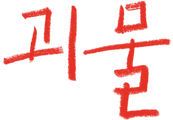

Watcha Review Analysis · 2023
괴물
Monster · Kore-eda Hirokazu
관객 리뷰 477건이 말하는 《괴물》 — 무엇에 집중했고, 왜 위로받았나
왓챠 리뷰 477건
평균 ★ 4.2
4점 이상 77.7%

→ / SPACE 로 이동
Executive Summary
관객은 괴물을 찾으러 갔다가
나를 발견하고 위로받았다
왓챠 관객 리뷰 477건 · Firecrawl 수집 · 2026.10
Keyword Frequency
가장 많이 나온 단어는 ‘괴물’, 그다음은 ‘나’
‘괴물’ 146건(30.6%), ‘나’ 62건.
관객은 괴물을 찾는 영화가 아니라 ‘내가 괴물이었는지’를 묻는 영화로 소비한다.
자주 인용된 표현
누가 괴물인가 12
몇몇 사람만 가질 수 있는 건 행복이라 부르지 않아
다시 태어나지 않아도 괜찮아
Core Question
“괴물은 누구인가?” — 질문은 관객에게 되돌아온다
“괴물을 찾다가
내가 괴물이었구나 하는 결말.”
토맛토마토
“누가 괴물인지 찾고 있던
나를 보고 충격에 빠졌다.”
진종원
관객은 ‘괴물’을 작품 속 실체가 아니라 타자화의 결과로 읽는다.
Theme Map
리뷰가 향한 곳 — 결말·위로와 괴물의 정체
Theme 01 · Structure
같은 사건을 세 번 — 판단은 스스로 무너진다
엄마 → 담임 → 아이들. 시점이 바뀔 때마다 앞선 판단이 반성된다.
Part 1
엄마 · 사오리
아들의 변화를 보고 담임을 의심하고, 학교를 불신한다.
Part 2
담임 · 호리
무책임해 보였던 행동에 알지 못했던 맥락이 드러난다.
Part 3
아이들 · 미나토·요리
어른들이 결코 닿지 못한 진실 — 눈부신 햇살 속에서.
“시점 바뀔 때마다 머리 한 대씩 맞는 느낌이었다.” — Yem
Theme 02 · Gaze
‘이해’조차 폭력이 될 수 있다
리뷰에서 편견은 오해 26 · 선입견 14 · 편견 10 · 판단 9 · ‘이해의 오만’ 8로 나타난다.
“오해의 오해의 오해…
이 영화는 괴물이 없다.”
김규민
“나 역시 편견으로 누군가에게 괴물이 되어버린 적이 있지 않을까.”
부모의 걱정 · 학교의 회피 · 선생의 침묵 — 모두 선의에서 비롯된 폭력.
Theme 03 · Ending
“다시 태어나지 않아도
괜찮아.”
“태풍이 불어서 다행이라고 생각했다. 그리고 다시 태어나지 않아도 괜찮다고 생각했다.”
— from.serein
관련 리뷰 68건(14%) · 결말은 비극적이면서도 구원적이다
Theme 04 · Sound & Image
《Aqua》가 눈물의 방아쇠를 당긴다
사카모토 류이치의 엔딩 곡. 감독 · 각본 · 음악의 협업이 정서적 절정을 만든다.
“
아쿠아만 나왔다 하면 파블로프의 개마냥 눈물이.”
다 영
“사카모토 유지의 비틀린 시선 · 고레에다의 담담함 · 류이치 사카모토의 쓸쓸함.”
Theme 05–07
연기 · 사랑 · 학교 — 다른 주제, 같은 결론
연기
소야 · 히나타
“소야랑 히나타 둘 다 거기서는 행복해졌길.” — 지후
배우·연기 7건 + 인물 언급 다수
사랑
보편적 사랑과 퀴어 서사
“표현은 달라도 모두 다 사랑하는 마음이었기에.”
‘사랑’ 23건 · 퀴어 4건
학교
조직적 회피와 무책임
“폭력에 대한 학교의 무감각한 태도… 숨이 막혔다.”
학교·폭력 23건
세 주제 모두 “괴물은 우리가 만든 시선”이라는 결론으로 수렴한다.
Emotional Arc
슬픔에서 성찰로, 성찰에서 위로로
눈물 · 울음38건 · 7%
여운5건+
위로 · 구원다수
자기 성찰다수
혼란 · 전복다수
Minority View
22%는 템포와 장르 혼합에서 멈췄다
22%
4점 미만의 유보적 평가. 작품 완성도보다
초반 템포 · 장르 혼합의 낯섦에 집중된다.
취향 불일치
“작품성과는 별개로 제 취향과는 머네요.”
초반 템포
“중반까지 화병 나서 끌 뻔했다. 끝까지 보니 명작이란 걸 알았다.”
작위성
“담임 파트에서는 《더 헌트》와 같은 작위성이 느껴졌다.”
장르 결합의 낯섦
“부조리극과 리얼리즘이 어색하게 결합되고 있다고 느꼈다.”
Conclusion
괴물은 타인이 아니라
우리가 만들어내는 시선이다.
01구조가 곧 주제 — 진실은 하나가 아니다
02관객을 심판대에 세우는 영화
03비극이 아닌 ‘위로의 영화’
04고레에다 · 사카모토 유지 · 류이치의 협업
리뷰의 30% 이상이 ‘괴물’과 ‘나’를 연결한다